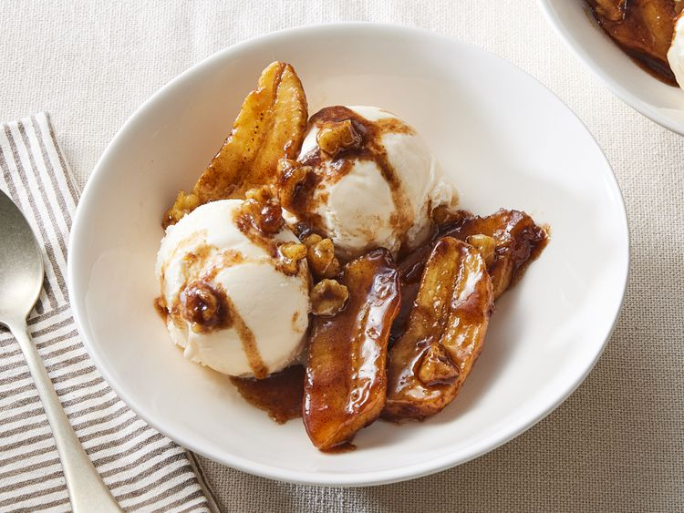

Bananas foster is made by cooking sliced bananas and walnuts in a buttery rum sauce and serving it over vanilla ice cream. A Father's Day favorite we all love!

This bananas foster recipe is a showstopping dessert that will impress everyone at your table — but it's surprisingly simple to make!
Bananas foster is a dessert consisting of sliced bananas and a rum sauce served over vanilla ice cream. It originated in New Orleans and is often prepared tableside in restaurants as a flambé (a cooking technique in which alcohol is added to a hot pan, creating flames).
You'll find the full, step-by-step recipe below — but here's a brief overview of what you can expect when you make bananas foster at home:
While it's best to make bananas foster right before you plan to serve it, you can make the sugary rum sauce the day before. Store it in an airtight container in the refrigerator, then reheat on the stove before finishing the recipe as written.
"Just right," according to Bradley Miller. "Delicious and simple. Making sure the sugar is completely dissolved is very important for a great bananas foster." "I have made this for years," says Michelle Embrey Hembree. "It is so delicious! The only thing I do differently is substitute brandy for the rum. It's a favorite at my house. I usually make a double batch and it will all be gone that night or the next day." "Made this on the weekend with pecans and had to omit the vanilla (because I ran out), but it was so good," says LJ Shaw. "Used the remaining little bit on pancakes the next morning and I now have a new favorite pancake topper."